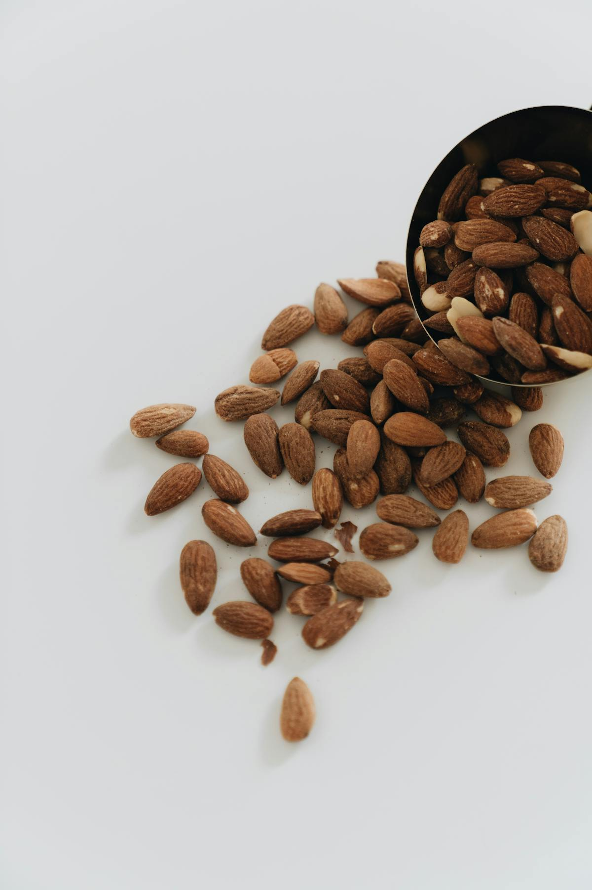

Almonds
Quick answer
Almonds can fit well into an anti-inflammatory diet because they provide vitamin E, magnesium, fiber, and mostly unsaturated fats. Their biggest strength is how easy they are to use as a snack, a breakfast topping, or a simple pantry staple.
What almonds are and how they fit an anti-inflammatory diet
Almonds (Prunus dulcis) are tree nuts native to the Mediterranean and Middle East, now predominantly grown in California, which produces about 80% of the world supply. They are available whole, sliced, slivered, as almond flour, almond butter, and almond milk.
They have been cultivated for over 5,000 years and still show up naturally in many cuisines, from Moroccan pastries to Indian sweets to European marzipan. That long history helps explain why almonds feel so familiar: they are widely used, easy to recognize, and easy to work into modern routines as well.
In everyday life, almonds are less about history and more about how naturally they fit into regular eating. They work in snack packs, oatmeal, yogurt bowls, salads, and nut butters, which is a big reason they come up so often in practical anti-inflammatory eating patterns.
Why almonds are often a strong anti-inflammatory choice
Almonds are best known for their vitamin E content. Vitamin E is a fat-soluble antioxidant, and almonds are one of the easiest foods people can use regularly when they want more of it in a whole-food form.
They also provide magnesium, fiber, and mostly unsaturated fats. That combination helps explain why almonds show up often in anti-inflammatory food lists, especially for people who want a snack or topping that feels familiar rather than specialized.
The other reason almonds matter is consistency. A food that travels well and sits happily in a bag, drawer, or pantry is often more useful in real life than one that only sounds impressive on paper.
Key nutrients in almonds
A 28g serving of almonds provides approximately 7.3mg vitamin E (49% DV), 76mg magnesium (18% DV), 6g protein, 3.5g fiber, and 0.3mg riboflavin (23% DV). They contain 164 calories per 28g, with about 73% of calories from mostly monounsaturated fat.
Why almonds work well as a snack and breakfast topping
Almonds are one of the easiest foods to use when you want an anti-inflammatory snack that does not need much planning. They travel well, keep well, and pair naturally with fruit, yogurt, oatmeal, and toast.
That makes them useful in two places where people often need help: between-meal snacks and breakfast. A small handful of almonds or a spoonful of almond butter can make simple foods feel more filling without turning the whole meal into a project.
Potential health benefits
- Provides a rich whole-food source of vitamin E
- Adds magnesium, fiber, and mostly unsaturated fats in one familiar food
- Works well as a portable snack between meals
- Fits naturally into breakfast bowls, snack plates, and everyday meal add-ons
- Helps make everyday meals feel a little more filling and steady
How to eat almonds
- Keep a 28g portion of raw almonds as a daily desk or bag snack
- Add sliced almonds to oatmeal, yogurt, or overnight oats
- Use almond butter on whole-grain toast with banana slices
- Toast slivered almonds and toss into salads or grain bowls
- Use almond flour in baking when you want a nut-based alternative
- Blend almonds into smoothies for creaminess and healthy fats
How to shop for and store almonds
Buy raw or dry-roasted almonds without added oils or heavy sugar coatings if you want to keep them as a simple everyday option. Store them in an airtight container in a cool, dark place, or refrigerate them if you keep them around for longer stretches. Whole almonds with the skin still on are usually the easiest choice.
FAQ
Are almonds anti-inflammatory?
Almonds can be a helpful part of an anti-inflammatory diet because they provide vitamin E, magnesium, fiber, and mostly unsaturated fats. They work best as an easy food you use regularly, not as a standalone fix.
Are almonds a good anti-inflammatory snack?
Almonds are one of the easiest anti-inflammatory snacks to keep around because they are portable, shelf-stable, and filling.
How many almonds should I eat per day?
A practical serving is about 28 g, or roughly 23 almonds. That amount is often used in studies and is an easy place to start.
Are roasted almonds less healthy than raw?
Light dry-roasted almonds still keep most of their nutritional value. The bigger difference usually comes from added oils, sugar, or heavy salt.
Is almond flour anti-inflammatory?
Almond flour can fit into an anti-inflammatory eating pattern because it is made from almonds and provides vitamin E, magnesium, and unsaturated fats. It is still calorie-dense, so use it as one ingredient within a balanced diet.
Is almond milk as nutritious as whole almonds?
No. Whole almonds provide much more protein, fiber, and vitamin E than most commercial almond milks.
Evidence note
Almonds have been studied in trials looking at lipids, glycemic control, satiety, and inflammatory markers. That research is one reason they continue to appear in discussions of anti-inflammatory eating, though it still makes the most sense to see them as one supportive food inside a broader pattern rather than as a treatment on their own.
This page describes almonds as a supportive food within a broader anti-inflammatory eating pattern, not as a standalone medical treatment.